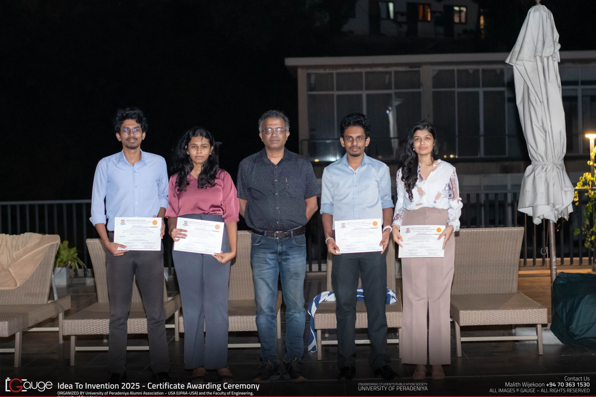
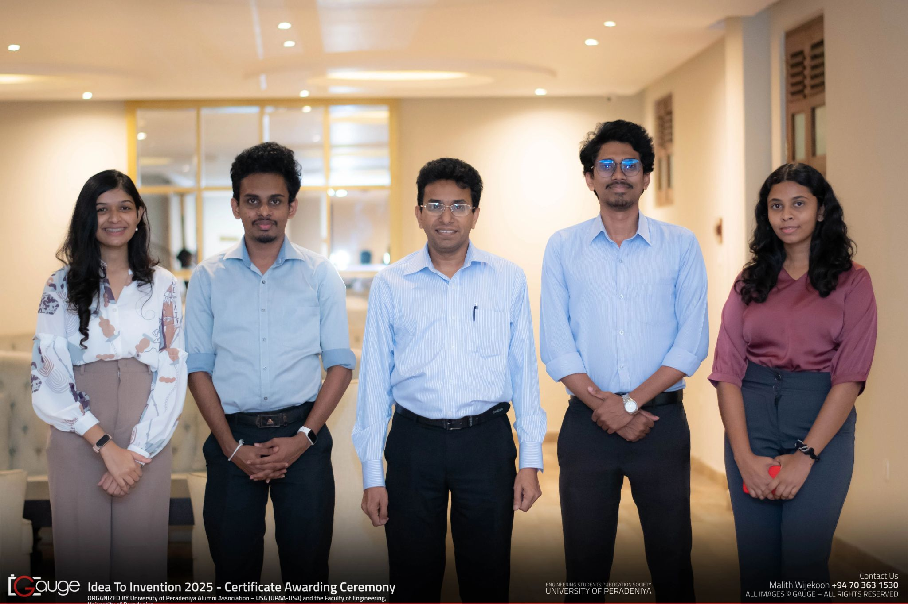
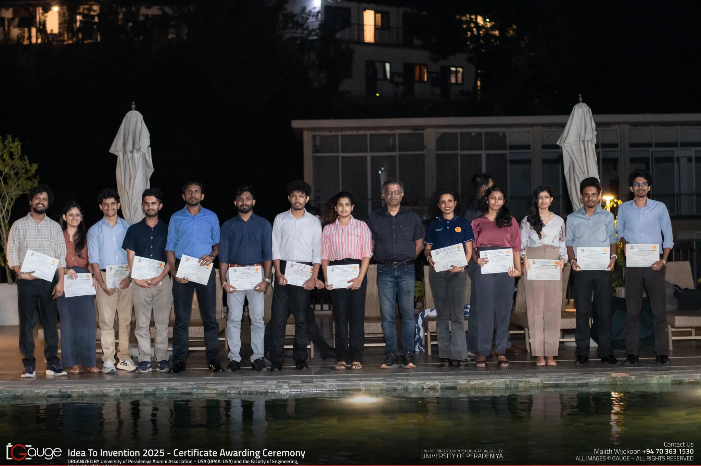

2nd Place
UPAA–USA Innovation Award
Idea to Invention (I-TO-I) 2025
Second Place — Idea to Invention Competition 2025
17 January 2026
Oak Ray Resort, Kandy
UPAA–USA & Faculty of Engineering, UoP
Team FloodLink proudly secured 2nd Place at the inaugural Idea to Invention (I-TO-I) Competition under the UPAA–USA Innovation Award.
FloodLink — a real-time flood-monitoring and prediction system powered by LoRa networks — proudly secured Second Place at the inaugural Idea to Invention (I-TO-I) Competition under the UPAA–USA Innovation Award.
The certificate awarding ceremony was organised by the University of Peradeniya Alumni Association – USA (UPAA–USA) and the Faculty of Engineering, University of Peradeniya — a milestone moment in a journey driven by innovation and impact.
Moments from the Ceremony



Click any photo to view it full size.